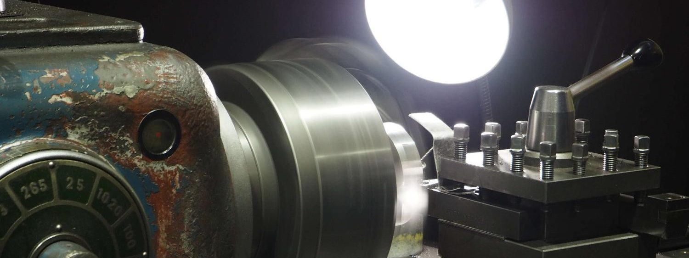
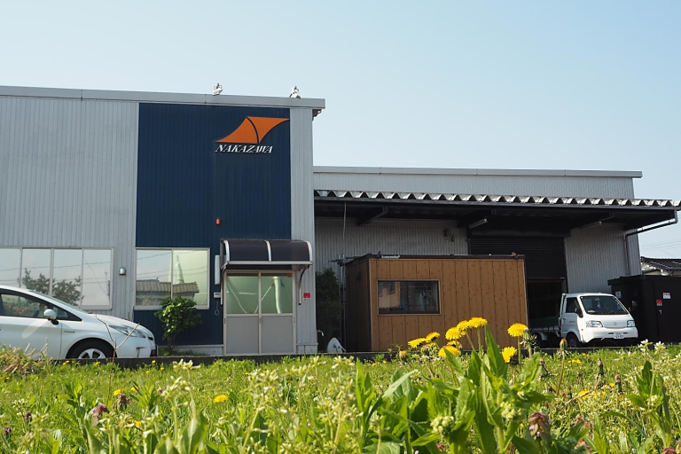
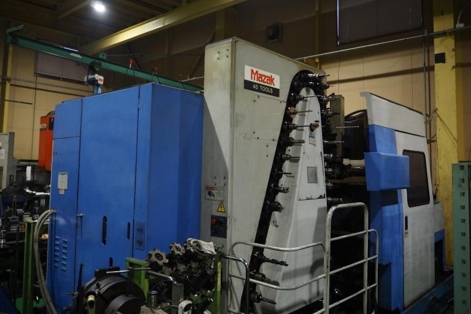
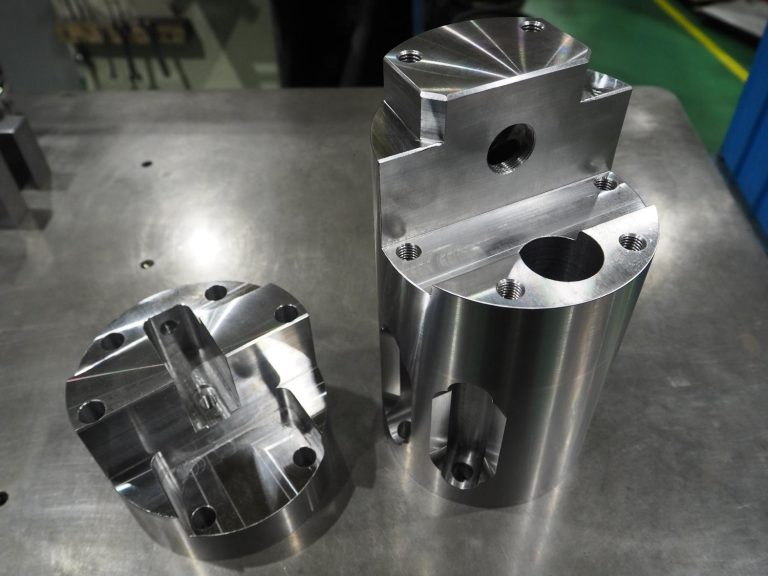
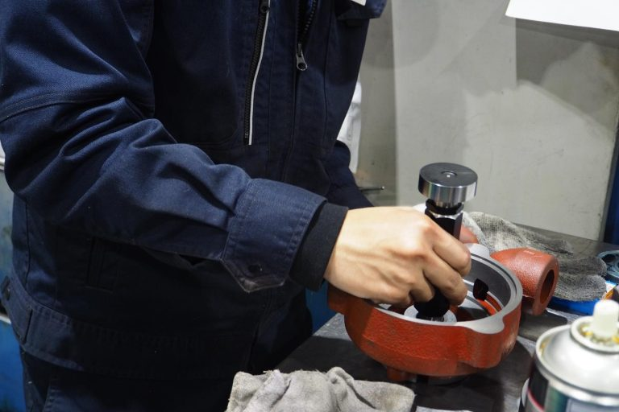

継続は力
技術は日々磨かれる
金属切削加工のプロフェッショナル
Kezuri ～削り～
「落とす 挑く（ひく） なめる」
すべて削りに対する先人から伝わる表現です。音、におい、機械から伝わる振動。五感を研ぎ澄ませ集中する瞬間。時代は移り変わっても、私たちは削りを追求し続けるスペシャリストです。

私たちのサービス
金属切削加工のスペシャリスト
NC旋盤・マシニングセンタを中心とした高精度加工を行っています。
- ✓ 高精度加工（公差±0.01mm）
- ✓ 多品種少量生産対応
- ✓ 短納期対応可能
- ✓ 24時間稼働体制

最新鋭の設備と技術
最新のCNC工作機械と熟練の技術者が、高品質な製品をお届けします。
- ✓ 最新CNC機械15台以上
- ✓ 3次元測定機完備
- ✓ ISO9001品質管理体制
- ✓ 定期メンテナンス実施


一緒に成長しませんか？
技術を磨き、ともに成長できる仲間を募集しています。経験者、未経験者問わず歓迎です。
- ✓ 充実の研修プログラム
- ✓ 技術向上支援制度
- ✓ ワークライフバランス
- ✓ 成長できる職場環境

会社概要
| 社名 | 有限会社 中澤鉄工所 |
|---|---|
| 所在地 | 〒954-0082 新潟県見附市葛巻２丁目５番５号 |
| 創業 | 昭和42年 |
| 従業員数 | 18名 |
| 事業内容 | NC旋盤・マシニングセンタを中心とした金属切削加工 |
お気軽にお問い合わせください
金属加工のことなら、中澤鉄工所にお任せください。